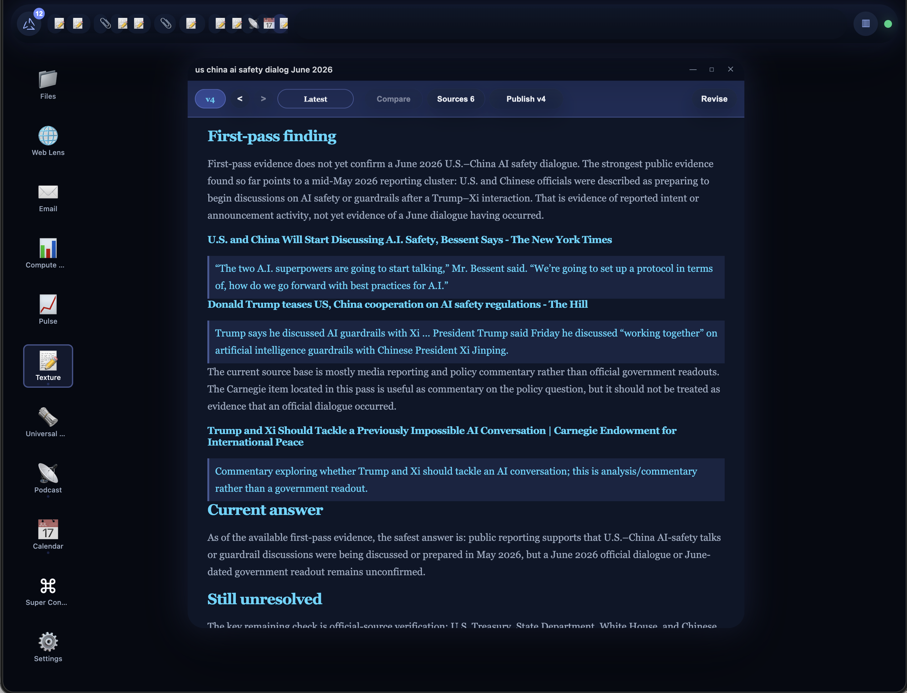

Chat is a command line. You type a command, text comes back, and the state stays hidden. You learn the incantations — prompting is command syntax.
The CLI never died; power users still live in it. The GUI opened computing to everyone else, and that is where the market grew by orders of magnitude.

| Texture — living documents | staging |
| Mail — correspondence, every send owner-gated | staging |
| Newspaper — provenance-linked wire | refactor |
| Radio — the station you steer by voice | development |
| Founder salary | $10K |
| Inference — open-weight volume, frontier bursts | ~$3–5K |
| Infrastructure and miscellaneous | ~$3–4K |
| Contractors, amortized — audit, legal | ~$3K |
| Launch plus first paying cohort | inference ramp |
| MRR reaches [X] | first builder |
| MRR reaches [Y] | second builder |
| MRR reaches [Z] | operations |